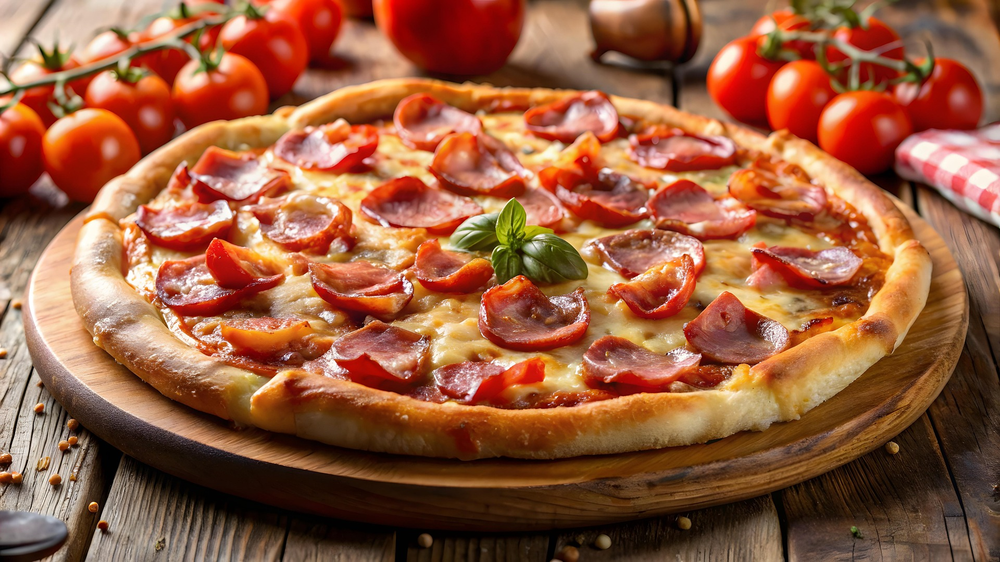

Pizza Recipe

A delicious flatbread topped with tomato sauce, cheese, and various toppings, baked to perfection.
Pizza is a beloved dish that originated in Italy and has become popular worldwide. It consists of a round, flat base of leavened wheat-based dough topped with tomatoes, cheese, and often various other ingredients (such as anchovies, olives, vegetables, meat, etc.), which is then baked at a high temperature, traditionally in a wood-fired oven.
There are countless variations of pizza, from the classic Margherita with fresh basil to more adventurous toppings like barbecue chicken or vegan cheese. It's a versatile dish that can be customized to suit any taste.
Ingredients
- Pizza dough
- Tomato sauce
- Shredded mozzarella cheese
- Olive oil
- Fresh basil leaves
- Salt
- Various toppings (pepperoni, mushrooms, bell peppers, onions, etc.)
Steps to Make Pizza
- Preheat your oven to the highest setting (usually around 475°F or 245°C).
- Roll out the pizza dough on a floured surface to your desired thickness.
- Transfer the rolled-out dough to a pizza stone or baking sheet.
- Spread a thin layer of tomato sauce over the base.
- Sprinkle a generous amount of shredded mozzarella cheese on top.
- Add your favorite toppings.
- Drizzle a little olive oil over the pizza.
- Bake in the preheated oven for 10-15 minutes, or until the crust is golden and the cheese is bubbly.
- Remove from the oven and let cool for a few minutes.
- Garnish with fresh basil leaves before slicing and serving.